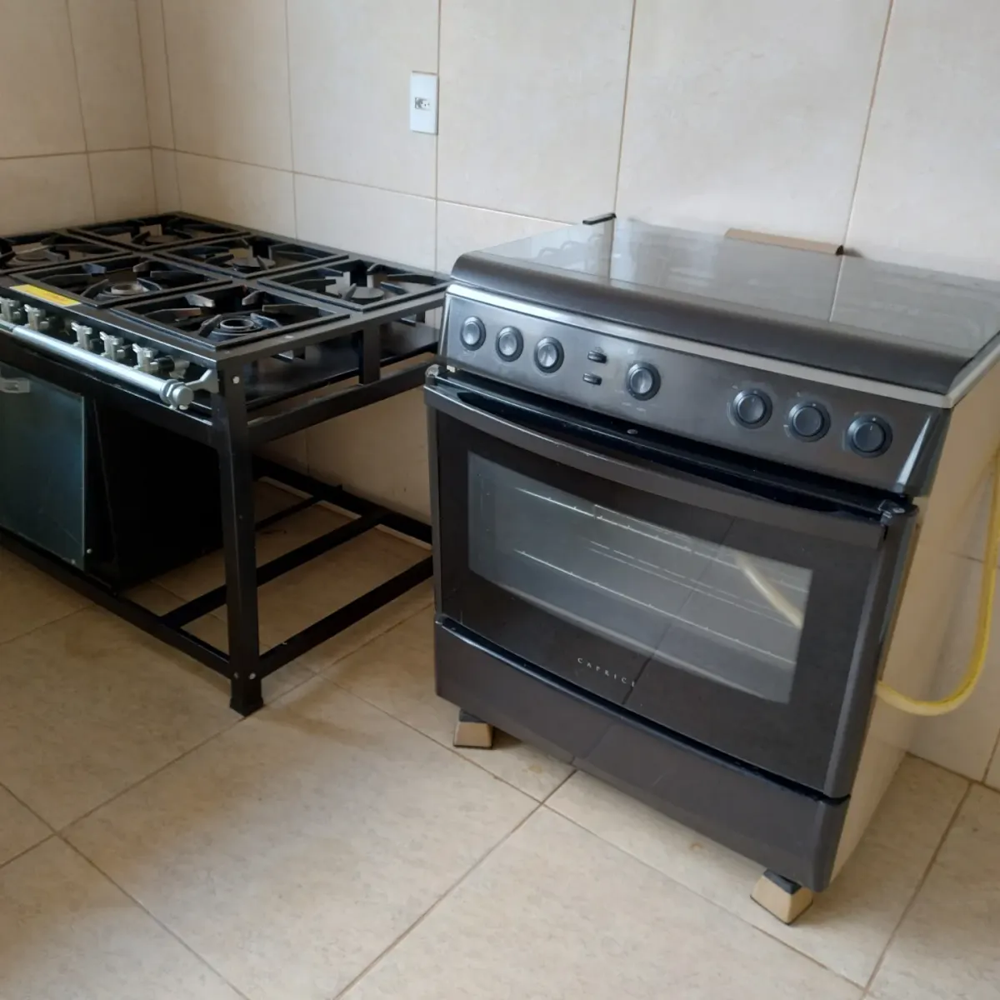
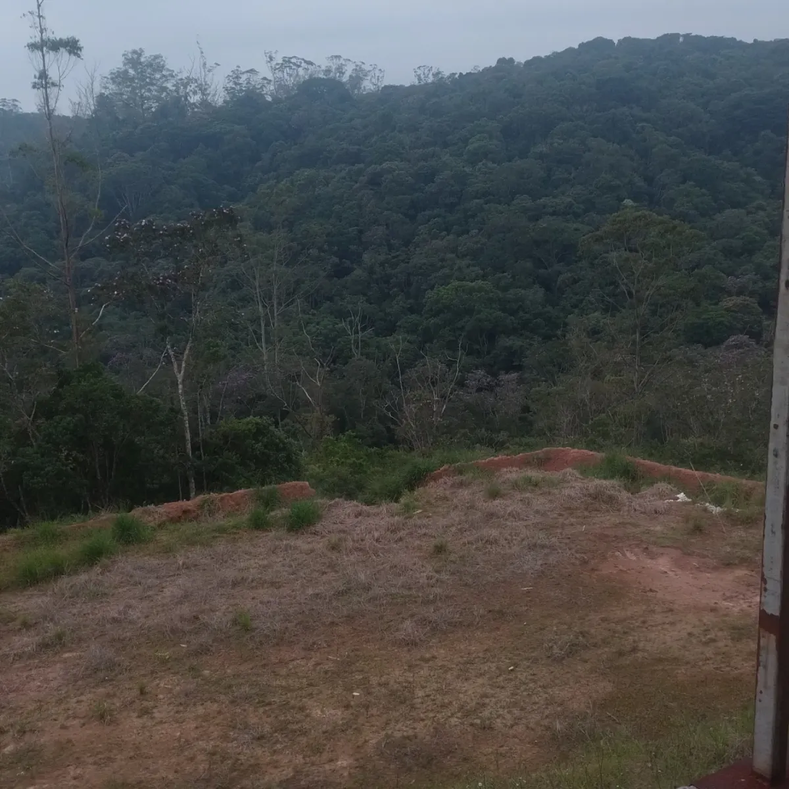

Seu evento para até 200 pessoas em Ribeirão Pires
De dia: piscina, campo e churrasqueira para a família e os amigos aproveitarem sem pressa.
- pessoas de dia
- 200
- com pernoite
- 120
- vagas de carro
- 50
Chácara Descanso Feliz é uma chácara para eventos no Jardim Caçula, em Ribeirão Pires (SP). Recebe até 200 pessoas durante o dia e até 120 com pernoite, em alojamento com alas masculina e feminina. Tem salão de festas, cozinha industrial, churrasqueira, piscina adulto e infantil, campo de futebol e estacionamento para 50 carros.
Que evento você vai fazer?
Escolha e veja fotos de eventos que já aconteceram aqui.
Tudo num lugar só
Você não precisa alugar salão, cozinha e área de lazer separados.

Salão de festas
Coberto, para até 200 convidados, com pista e área para DJ.
Cozinha industrial
Fogões de 6 bocas, forno, freezers e geladeira.
Churrasqueira grande
De tijolos, com bancada e pia ao lado.
Piscina adulto e infantil
Borda de pedra e vista para a mata.
Campo, playground e jogos
Campo de futebol, brinquedos para as crianças, sinuca e pebolim.
Estacionamento
Para 50 carros, dentro da chácara.
Dorme todo mundo aqui
O alojamento recebe até 120 pessoas, com alas masculina e feminina separadas. Perfeito para retiros de igreja, acampamentos e para quem não quer pegar estrada depois da festa.
- Beliches e camas em alas separadas
- Banheiros masculino e feminino
- Café da manhã na própria cozinha da chácara
Monte seu orçamento em 1 minuto
Responda o básico e a mensagem chega pronta no WhatsApp do Devair. Ele retorna com valores e datas livres.
Venha conhecer antes de fechar
Rua Trabiju, 55Jardim Caçula, Ribeirão Pires (SP)
Visitas com hora marcada pelo WhatsApp. Fale com o Devair.

Perguntas frequentes
Quantas pessoas cabem?
Até 200 pessoas em eventos durante o dia e até 120 pessoas com pernoite.
Quanto custa?
Depende da data, do número de pessoas e se tem pernoite. Monte seu orçamento acima e o Devair responde com o valor certinho para o seu evento.
Posso levar meu buffet e minha decoração?
Pode. A cozinha industrial fica à disposição do seu buffet, e a decoradora pode montar tudo no dia anterior, combinando o horário com a gente.
Até que horas pode ter música?
Na área aberta, até as 22h. No salão coberto, a festa segue até o horário combinado na reserva.
Tem estacionamento?
Sim, para 50 carros, dentro da chácara.
Como garanto a minha data?
Depois de acertar os detalhes com o Devair, a data fica reservada com um sinal. Datas de fim de semana costumam fechar com meses de antecedência.